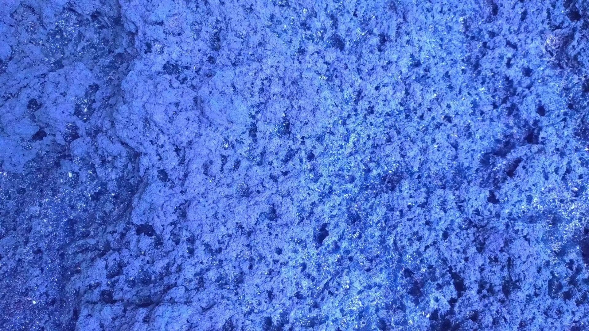
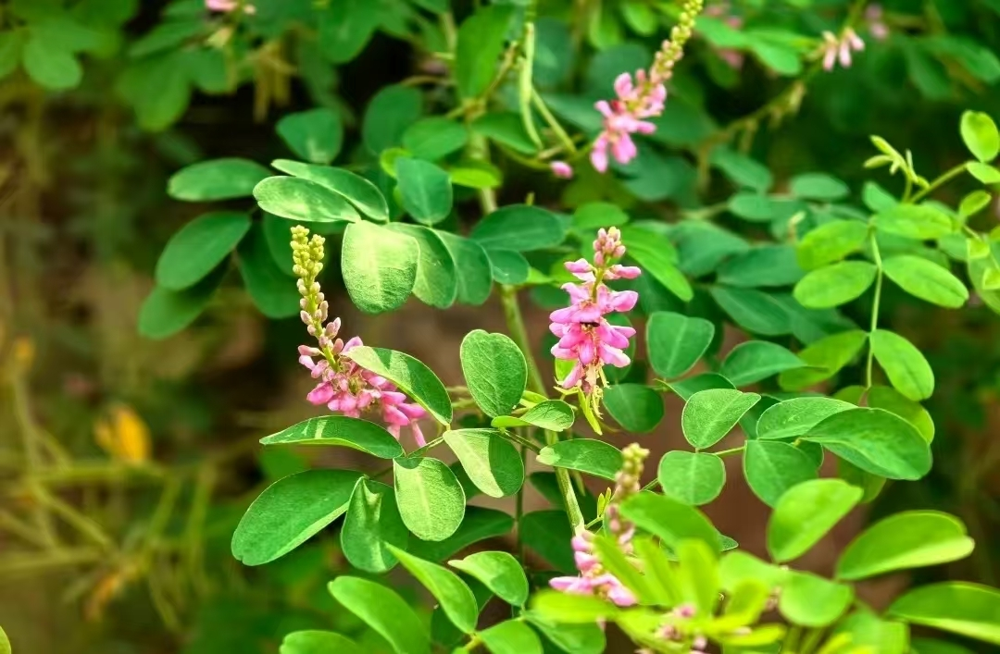

客家·墩头蓝
广东省省级非物质文化遗产
墩头蓝纺织技艺包含 纺、耕、织、染、踹 五个核心环节，共近三十道工序，至今保持着原生态的传统工艺方式。据学术研究考证，墩头蓝的蓝染工艺在传统基础上进行了诸多细节改良，形成了独具特色的技术体系。下面逐一为大家介绍：
"'墩头蓝'从传统染织中传承并改良了制蓝靛、纺织和蓝染等工艺，以纯蓝染的服饰和生活用品'流行'起来，这是由蓝草的经济性和药用功能、蓝色的耐久性以及客家人崇尚节俭的文化传统所决定的。"
—— 李银广、陈建宏等，《"墩头蓝"蓝靛制作与蓝染工艺考辩》，2022

把墩头蓝纺纱的原材料变成可以用来织布的纱线。主要使用 棉 和 麻 两种本地种植的植物，其中棉是主要原料。
六个步骤：
最终纺成均匀的纱线，为后续织造奠定基础。
对纱线进行处理的步骤，增强纱线性能：

织造过程包括 穿综、上机、织布、下布 等步骤。面料的图案类型决定了织染的顺序：
手工艺人踩脚踏板提综，使上下层经线交叉，拉动飞梭引入纬线，循环重复直到织出所需长度的面料。这种传统的织造方式，至今仍在墩头村保存完好。
核心流程： 种蓝 → 采蓝 → 打蓝 → 制蓝 → 染布 → 洗布 → 晒布 → 蒸布，共八个步骤。
据《天工开物》记载"凡蓝五种，皆可为淀"，墩头村选用的是最适合当地环境的马蓝（又称板蓝、大蓝）。马蓝喜山坡溪边阴湿处，单株可高达1米以上，叶片可达10~25厘米，提取的靛蓝成分比其它蓝草多数倍，一年可收割两次（七月和九月）。
《齐民要术》载："七月中作坑……刈蓝倒竖于坑中，下水，以木石镇压令没。热时一宿，冷时再宿，漉去荄，内汁于瓮中。"墩头村至今保留完整制靛流程：
⚠ 浸泡时间、气温高低、石灰比例等都会影响色素品质，需长期摸索总结。
"晨灰"：清晨向染缸加入少量草木灰水，唤醒染水的活性。
"晚酒"：太阳落山后往染缸加入少量米酒，促进微生物发酵还原。
这种人工发酵还原染色工艺是古代匠人智慧的结晶。有句老话叫 "一天蓝三天乌"，浸染时间越长颜色越深。




染料主要使用当地生产的 板蓝，采摘叶茎后清洗并发酵制取靛蓝染料。墩头蓝面料有两种制作方式：先织后染（纯色）和先染后织（花色）。

"踹"是一种使用形状类似元宝的 元宝石 对布料进行碾压的传统工艺，相当于现代的熨斗。元宝石轻则五六百斤，重则千余斤。
布匹染色后常出现缩水和起褶问题，使用踹布石手工碾压可以使面料变得平整，提高颜色均匀度和韧性，使布料更加耐用。
据学术研究，墩头蓝以纯蓝素染为主，原因有三：
此外，马蓝（板蓝根）还具有清热解毒的药用功效，当地人会采摘马蓝枝叶泡水喝，遇蚊虫叮咬也会涂抹蓝靛泥。